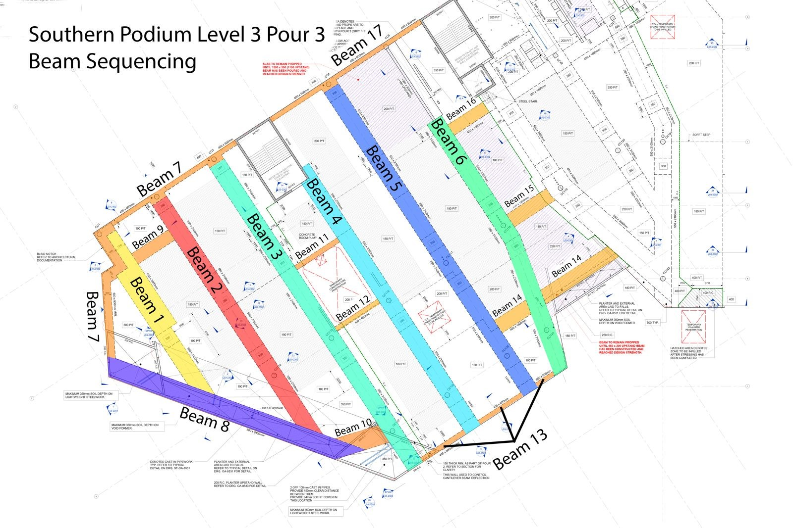
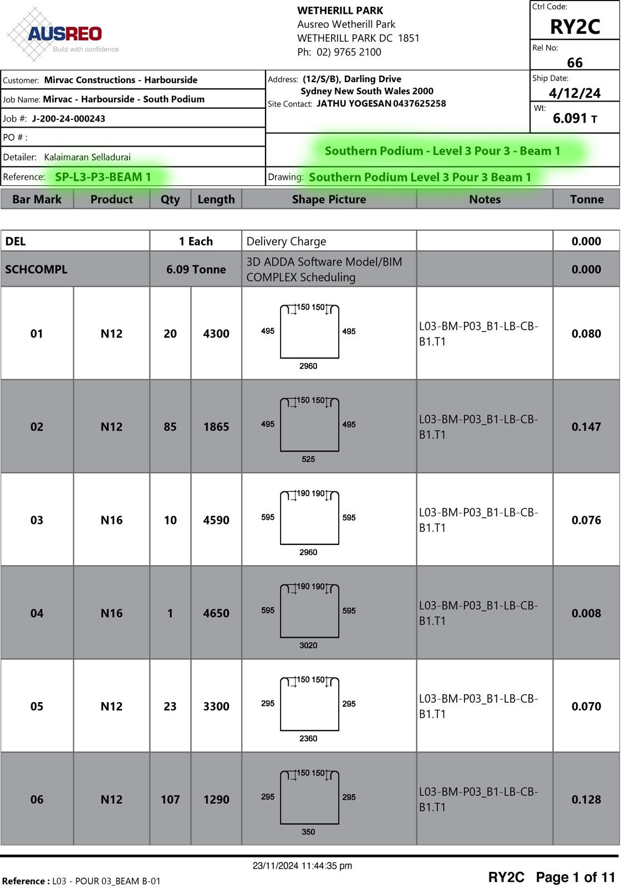
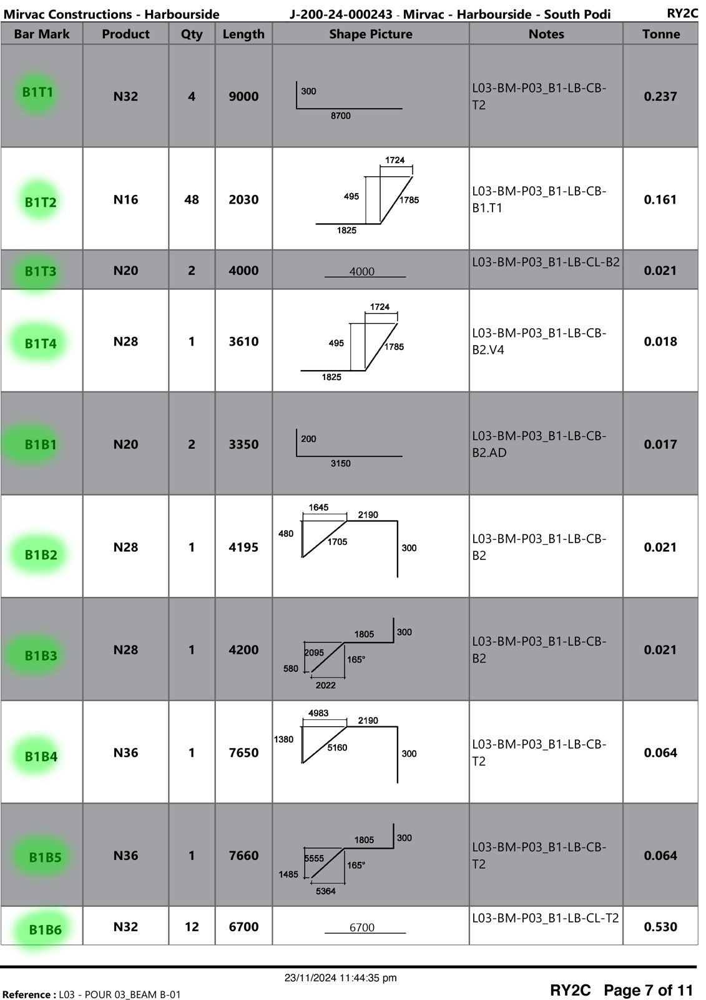
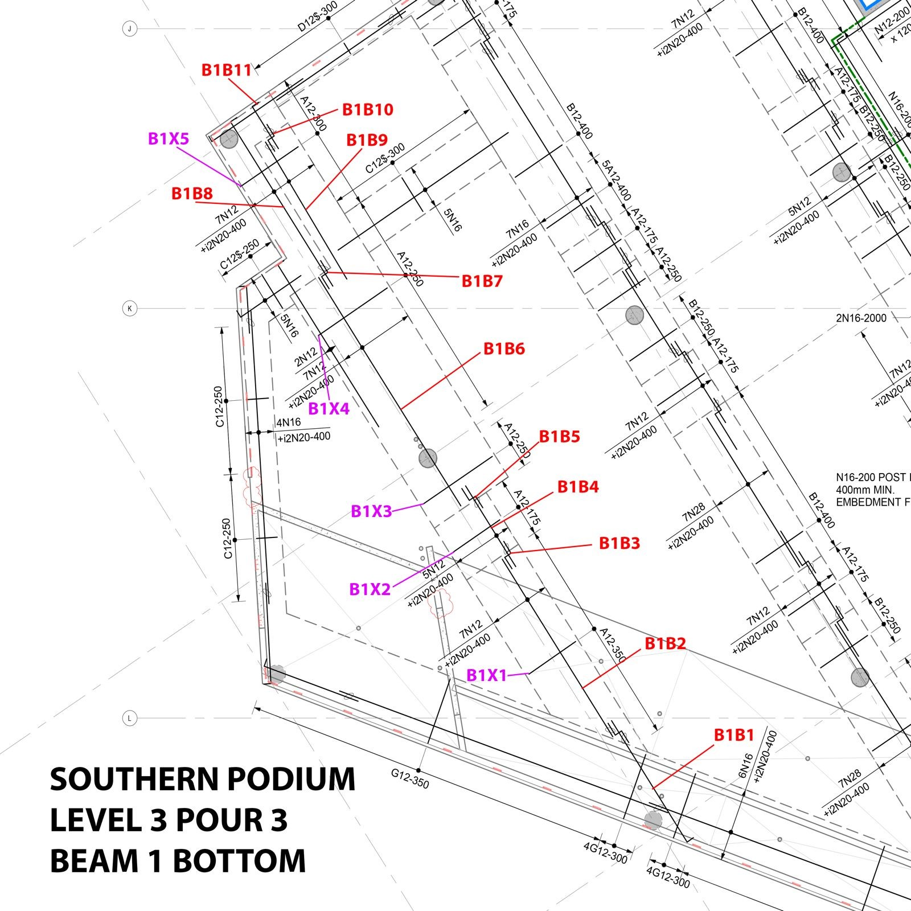

Hi Team, for the future can we start looking at giving beams names to better identify schedules etc. The attached is just a colour coded markup of Southern Podium L3 P3 just as a guide to demonstrate. In doing this we can better organise deliveries, landing areas, bundle separation, program. Also a benefit to this is that should there be an issue with one of the beams then we can easily identify its location immediately. Should we have delivery limitations then at least we can choose which individual beam to be delivered and at least it can be more productive on site instead of starting and stopping different locations of different beams (as seen on friday 13/12/24). What do you think? (this isn’t uncommon for a good scheduler and was used for many years…bring back the biff!) :)
Then we can identify the schedules using descriptions which is easier to notice and search for. Not to mention link to corresponding marking plans and drawings for cross referencing.
Tagging bars for the beams in this fashion also will help with identifying (pin pointing) to a location of a beam should there be an issue. Also this helps in beam prepping an area making the process faster for all. Note that the tag says “B1T1” The B1 represents beam number, this helps when unloading the truck can be done by tag numbers and quickly can identify its landing location. T1 represents top bar, this will identify its location within the confines of the beam. (for bottom steel it will say B1, see lower in the sheet). Also note that the bars are in consecutive order, (Which is how schedules have been produced in the past, not here though) this will also identify its location laterally through that beam number. For example if this is a north to south running beam then say the B1T1 or B1B1 will be in the north and splice up to the last bar B1T9 or B1B9 in the south giving you a clear indication of the position the bar is intended for. For Stirrups, there usually tagged B1X1 for external ligatures and B1X1.1, B1X1.2 For internal ligatures of the corresponded set. This also helps with beam prepping and spreading and also unloading stirrups out of bags and bins to identify its location purely off tag numbers.
Here is a marking plan mock up indicating what i was explaining. A simple linear scheduling which is clean and easy. Colours help the eyes locate what needs to be read. This also maps out the beam so should there be a issue with a bar, you can immediately locate it without losing time figuring out its location by descriptions.
